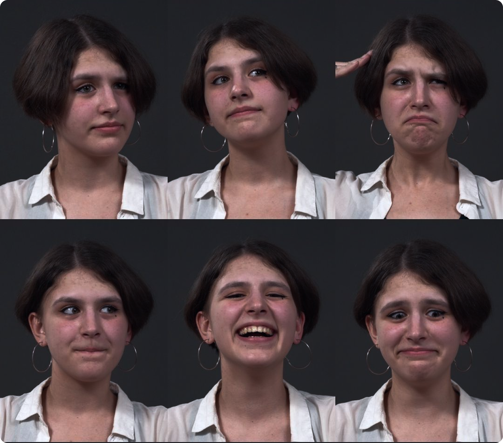
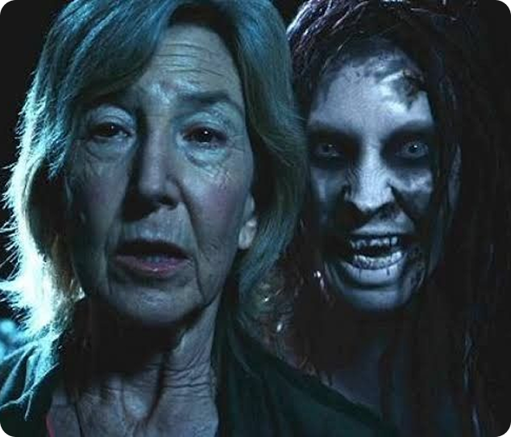
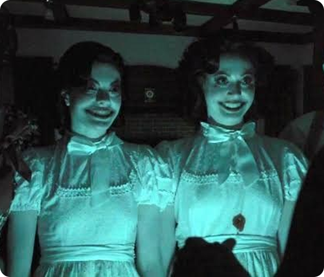
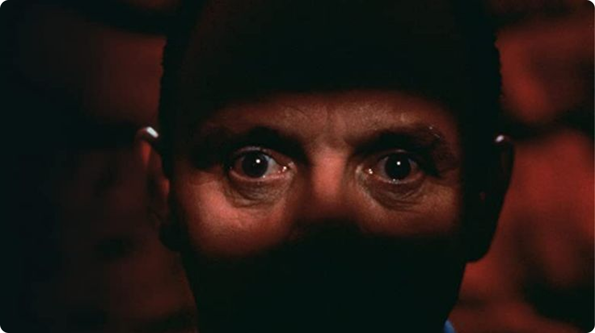
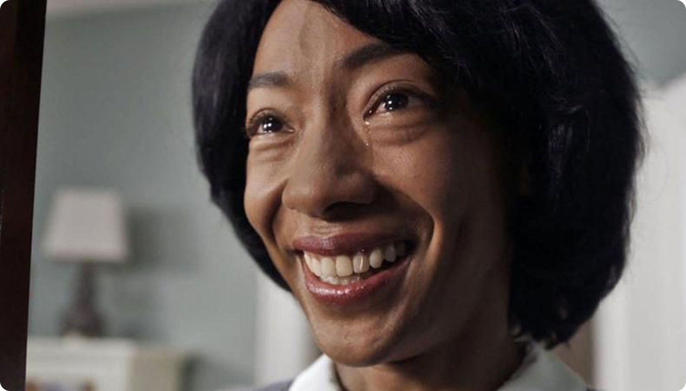
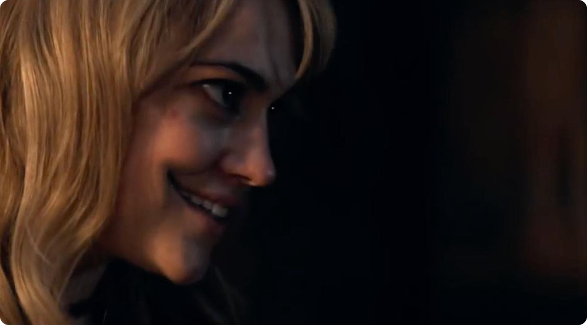
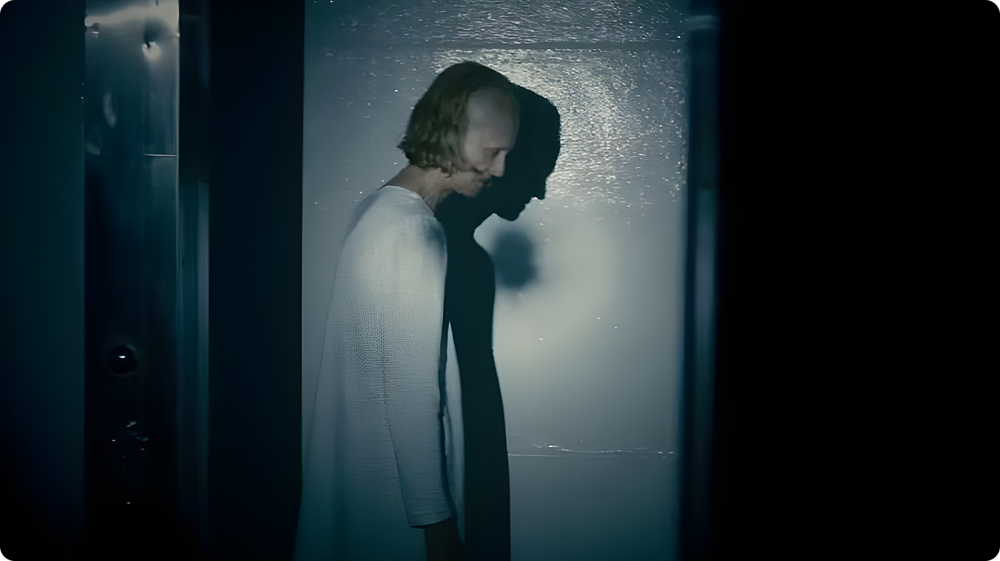
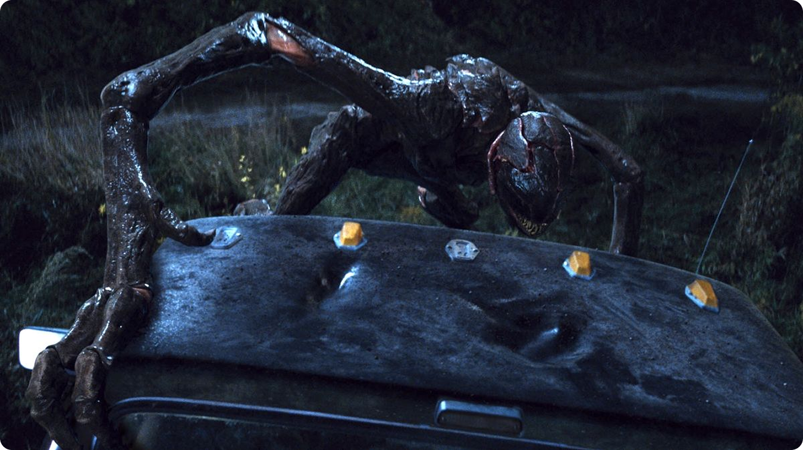
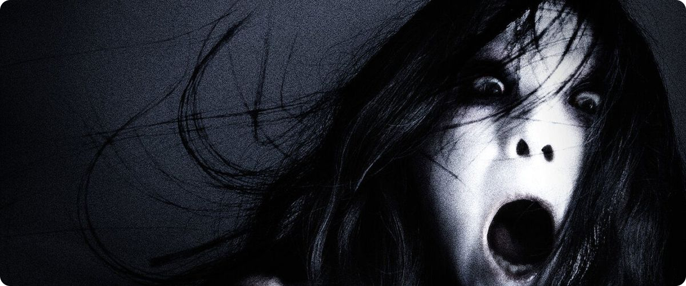
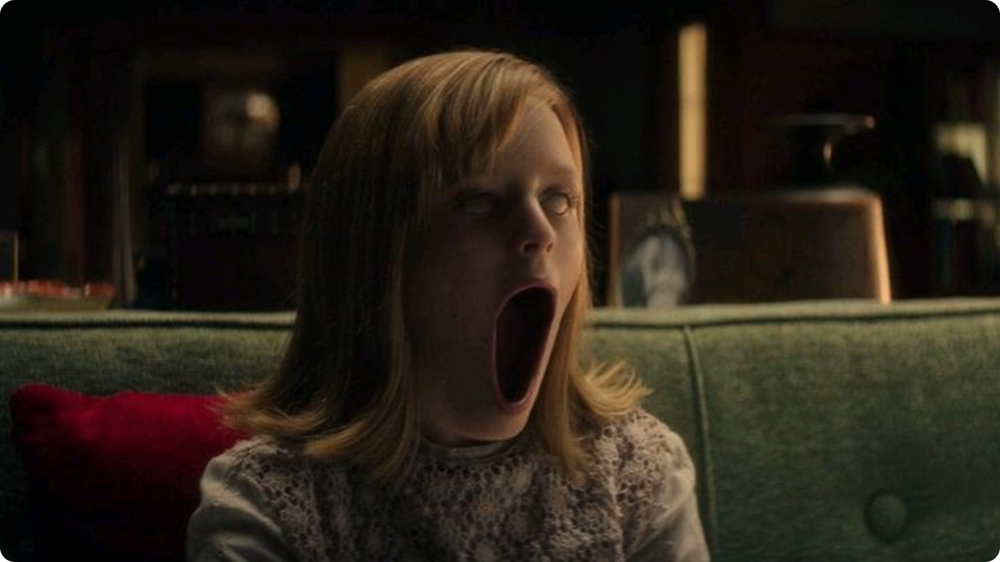

Лицо как главный объект доверия
Человеческое лицо — один из первых визуальных сигналов, которые мы учимся считывать. По глазам, рту, напряжению мышц и цвету кожи мы определяем эмоции, намерения, состояние здоровья и угрозу. Поэтому даже маленькое нарушение в лице считывается очень быстро.
В обычной жизни мы постоянно отвечаем себе на вопросы:
- человек спокоен или агрессивен;
- улыбается искренне или притворяется;
- живой он, больной, уставший, опасный;
- смотрит на нас осознанно или «сквозь» нас, утратив контроль.

Хоррор использует этот механизм против зрителя. Он показывает лицо, которое вроде бы понятно, но при этом не поддаётся нормальному чтению. Улыбка есть, но она не выражает радость. Глаза открыты, но в них нет контакта. Кожа выглядит живой, но слишком напряжённой или мёртвой. Так возникает ощущение: перед нами человек, но с ним что-то фундаментально не так.
Эффект «почти человека»
Малые изменения/искажения лица пугают потому, что они попадают в зону «почти нормального». Если монстр сразу выглядит как монстр, зритель понимает правила: это чужое, опасное, фантастическое существо. Но когда перед нами обычный человек с едва нарушенной мимикой, мозг не может быстро выбрать категорию.
Это и есть сила такого визуального приёма. Лицо находится между двумя состояниями:
- человек / не человек;
- улыбка / угроза;
- естественное / искусственное.


Чем меньше изменение, тем тревожнее оно может восприниматься. Радикальная трансформация иногда даже снижает страх, потому что делает образ очевидным. А вот маленькое искажение оставляет зрителя в подвешенном состоянии. Он продолжает искать объяснение, но не находит его.
Глаза и отсутствие контакта
Глаза в хорроре часто работают сильнее любого спецэффекта. Достаточно сделать взгляд чуть более неподвижным, стеклянным или направленным не совсем туда, куда должен быть направлен человеческий взгляд. В таких случаях персонаж перестаёт восприниматься как собеседник и начинает казаться оболочкой.

В «Прочь» особенно важен этот разрыв между улыбкой и глазами. Рот изображает радость, но глаза не подтверждают её. Получается конфликт двух сигналов: нижняя часть лица «говорит» одно, верхняя — другое. Из-за этого улыбка становится не дружелюбной, а хищной, пустой и насильственной.

VFX здесь может быть почти незаметным: усиление блеска глаз, лёгкая коррекция направления взгляда, затемнение области вокруг глаз, минимальная деформация век. Всё это не превращает человека в монстра буквально, но нарушает ощущение живого присутствия.
Рот и улыбка как угроза
Улыбка — один из самых двусмысленных элементов лица. В норме она связана с радостью, вежливостью, симпатией. Но если улыбка слишком широкая, слишком долгая или появляется в неподходящий момент, она становится пугающей. Хоррор давно понял: неестественная улыбка может быть страшнее клыков.
В «Правда или действие» рот становится зловещим символом вторжения. Персонажи улыбаются так, будто их лица больше не принадлежат им, а улыбка превращается в жуткую, принудительную маску, лишенную всяких эмоций. Именно эта потеря контроля над собственным лицом и вызывает настоящий ужас.
Цифровая обработка может усиливать этот эффект за счёт:
- лёгкого расширения рта;
- подчёркивания зубов;
- фиксации мимики в неестественно долгом положении.
Важно, что такой эффект не должен быть слишком заметным. Если рот становится карикатурным, зритель может воспринять сцену как комичную. Поэтому хороший VFX в подобных случаях работает на границе видимого.

Кожа — важный показатель
Кожа тоже играет огромную роль. Она сообщает зрителю, живой перед ним человек или нет, здоров он или болен, находится ли он в нормальном состоянии. В хорроре кожа часто становится поверхностью, на которой проявляется внутреннее нарушение.
В «Демоны Деборы Логан» ужас строится не только на теме одержимости и болезни, но и на постепенном изменении тела и лица героини. Старение, слабость, болезнь и сверхъестественное воздействие визуально накладываются друг на друга. Лицо пугает именно потому, что его нельзя однозначно прочитать: это медицинское состояние, демоническое присутствие или разрушение личности?

Кожа становится не просто оболочкой, а доказательством того, что внутри человека происходит что-то неправильное.
Почему это страшнее большого монстра

Большой монстр пугает очевидной внешней угрозой. Он нападает, рычит, ломает пространство, что мы от него и ожидаем. Но изменённое человеческое лицо пугает иначе: оно разрушает границу между нормальным и ненормальным внутри привычного мира. Такой ужас интимнее. Он не где-то снаружи, а в человеке, который мог бы быть знакомым, близким, обычным.
Этот приём особенно эффективен по трём причинам:
- нарушение повседневного восприятия лиц;
- искажение социального доверия, то есть считывания эмоций;
- появление неопределённости на месте предсказуемости.


Именно поэтому малые цифровые изменения часто действуют сильнее, чем полностью нарисованный монстр. Они не заменяют реальность фантазией, а заражают саму реальность подозрением.
Вывод
VFX в хорроре не обязательно должен быть масштабным. Иногда самый сильный эффект возникает из минимального вмешательства: чуть шире улыбка, чуть пустее взгляд, чуть холоднее кожа. Такие изменения работают потому, что человеческое лицо — главный инструмент распознавания эмоций, безопасности и присутствия другого человека.

Такие фильмы показывают, что современный хоррор всё чаще пугает не самим монстром, а человеком, который почти остался человеком. И в этом «почти» скрывается главный источник страха. Когда лицо выглядит знакомо, но перестаёт вести себя по человеческим правилам, зритель сталкивается не с внешним чудовищем, а с поломкой самой системы доверия к видимому миру.